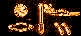
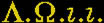

| Adam Weishaupt Höhere Mysterien II zweite Klasse Doceten.
Schwer ist es, mit Menschen von Gegenständen zu sprechen, für welche unsere Sprachen noch keine Worte haben; wo unsre ganze Sprache auf das Gegenteil eingerichtet ist; wo die Eindrücke der Sinnen uns von Jugend auf unaufhörlich das Gegenteil versichern, und darauf unsre abstrakte Begriffe, Verstand, Logic und Vernunft gebauet sind; wo unser ganzes Gedanken System, selbst unser Inneres Bewußtseyn im Grunde erschüttert wird; wo alle unsre Empfindungen, Gedanken, Urtheile, Wissenschaften, unsre allererste Grundsätze als zweifelhaft, als Täuschungen erscheinen sollen, wo es Raserey scheint, das Gegentheil gegen eine ganze Welt, gegen sein inneres und äusseres Gefühl zu behaupten. Doch, mit dem Allen wollen Wir es wagen, unsre Gedanken vorzulegen, und mit Menschenzungen Dinge vorzutragen, die wir durch unsre höchste Vernunft uns in der Ferne kaum vermuthen, aber in dieser Gestallt niemalen vollständig und deutlich entwickeln werden; Wir wollen sehen, wer dabey stark genug ist, sich aus dieser allgemeinen Täuschung heraus zu arbeiten, sich auf eine Zeit vom Körper und den Sinnen los zu machen, sich zu verklären, und in eine andre Welt hinein zu denken. Kein Mensch hat angeborne Begriffe. Alle unsre Begriffe erhalten wir erst durch die Sinne, in dem Maasse als solche besser oder schlechter, deren mehrere oder weniger sind. Diese sind anfangs blosse Empfindungen. Allgemeine und abstrakte Begriffe entstehen erst aus wiederholten Empfindungen; sind nichts als Empfindungen der Aehnlichkeiten, können also ohne vorhergehende einzelne Empfindungen, und folglich ohne vorhergehenden Gebrauch der Sinne, gar nicht gedacht werden; unser ganzer Verstand und Vernunft sind darauf gebauet als auf ihren einzigen Grund, oder hätte wohl ein, von Geburt aus blinder und tauber Mensch Verstand, Vernunft? Nach diesen Sinnen allein richten sich unsre dermaligen Begriffe von der Welt und ihren Theilen; mit andern Sinnen würden sich auch unsre Vorstellungen, Empfindungen ändern; wenn der Bau unsres Auges Microscopisch wäre: so würden wir eine neue, ganz andre Welt sehen, eine andre Sprache und Philosophie haben. Wenn Wir nun keinen einzigen angebornen Begriff haben; alle Begriffe bloß allein vermittelst der Sinne haben; diese Sinne einer Erniedrigung und Erhöhung, einer Vermindrung und Vermehrung fähig sind: wenn noch anbey die Erfahrung zeigt, daß mit jeder Verändrung oder Modification uns die Welt samt ihren Theilen anders erscheint, wir folglich mit andern Sinnen von der Welt und ihren Theilen ganz andre Vorstellungen haben müssen; da mit der Abändrung der Empfindungen sich auch die abstrakten Begriffe, alles, was darauf sich gründet, nach Abändrung seines Grundes sich ändern muß: so haben wir alle Ursach mit der grössesten Zuversicht zu behaupten, daß diese Erde so wohl, als alle übrigen Theile der Welt, das nicht an und vor sich seyen, was sie uns erscheinen; daß aber mit dem allen all unser Wissen auf dieses schwankende Suppositum gebauet sey; daß alles diese unsre darauf gebauete Begriffe und Abstractionen nicht in das Innere der Sache selbst führen; daß eben daher das Unauflösliche der meisten dahin einschlagenden Aufgaben komme; daß es also der Philosophien so viele und mancherley gebe, als verschiedene organisierte Wesen zur Wirklichkeit gelangen; daß die uns bekannte fünf Sinne ohne Grund als die einzige und letzte angenommen werden, aus welchen man sich die Welt vorstellen kann. Wenn diese Voraussetzungen richtig sind, so muß sich auch jeder gefallen lassen, nachstehende Folgen als wahr, als unbezweifelt anzunehmen, wenn sich auch sein ganzes Inneres Gefühl dagegen empören sollte, denn sie sind bloß unmittelbare Schlüsse und Folgen aus dem vorhergehenden, und das sich innerlich empörende Gefühl beweiset bloß allein, daß diese vorige Art zu denken zu sehr mit unsrer Natur, sozusagen auf das Innigste vereinigt seye, als daß man glauben könnte, daß gegenwärtiger Vortrag viele Anhänger und Bekenner finden sollte; es würde auch lächerlich seyn, wenn Menschen darnach reden und handeln wollten; indem solches auch die eifrigsten Bekenner nicht nothwendig finden, und solche Lehren bloß für diejenigen sind, welche sich den höchsten Betrachtungen der Natur und ihres Wesens widmen, welche bis an die Gränzen der menschlichen Vernunft vorzurücken gedenken. Es soll bloß allein dienen, den Stolz und Vorwitz des Menschen zu demüthigen, sie auf das, was ihnen nahe liegt, zu ihrer Glückseligkeit wesentlich ist, zurückführen, den Spekulationsgeist vertreiben und zum Handeln auffordern, zeigen, was sie nicht wissen, auch niemalen erforschen werden, das Ungereimte der bisherigen Systeme aufdecken, Menschen vor Irrwegen bewahren, den Materialismus und seine vermeinte Stärke entlarven; für die so stark angefochtene, und sonst beynahe nicht zu erweisende Fortdauer unsers Ichs neue Gründe erfinden, und eine so consolate, beynahe gänzlich verlachte Lehre in einem neuen Gesichtspunkte darzustellen, alten, abgenutzten Dingen neuen Reitz zu verschaffen und die Herrlichkeit Gottes und seiner Werke, auf eine neue, unerwartete, unwiderlegliche Art vor Augen zu legen; zu beweisen, daß der, auf seine Vernunft so stolze, aufgeblasene Mensch manches Unbegreifliche ohne Ursache verlache, daß vielleicht Unmöglichkeiten möglich sind. Wenn dann diese oben angeführte Grundsätze richtig sind: so folgt unvermeidlich daraus: 1. daß es uns unmöglich sey, in das Innere der Wesen einzudringen, die Entstehung der Welt und ihrer Grundtheile zu entdecken. 2. daß jede Empfindung bey diesem oder bey jenem, gleich oder verschiedentlich organisirten Wesen, im Grunde nichts weiter seyen, als die Wirkung äusserer Gegenstände, auf so, und nicht auf eine andre Art organisirterter Wesen. 3. daß mit jeder noch so unbemerkbaren Abändrung dieser Organisation auch nothwendig eine wahre, ihrer Ursach proportionirte Verändrung in der Vorstellung des vorstellenden und empfindenden Wesens vorgehen müsse. 4. daß jeder Mensch, Kraft seiner natürlichen oder künstlichen, erhöhten oder geschwächten Sinne, alle Zeit Recht habe; daß keiner mit aller, auch noch so grossen Verschiedenheit im Empfinden hintergangen werde, wenn er gleich anders, wie alle übrige Menschen empfindet, denn er siehet die Gegenstände so, wie es seine Organisation leidet, und Andre sehn sie auch nicht anders. 5. Daß wir Andre nur deswegen eines Mangels und Irrthums im Empfinden beschuldigen, weil ihre Art zu sehen und zu empfinden nicht die Unsrige, nicht die Allgemeine ist, so, wie es auch ihre Organisation nicht ist. 6. Daß es zwar Wesen und Kräfte ausser uns gebe, die uns aber in sich unbekannt, nur durch ihre Wirkungen erscheinen, und nach Verschiedenheit der Receptivität als empfindende Subjecte, verschiedentlich sich offenbaren; daß also die Gegenstände ausser Uns unsre blosse Gedanken sind, und daß also in so fern dieses System von dem Idealismus der Alten und Neuern gänzlich verschieden sey. 7. Daß aber doch Körper, Materie, Ausdehnung, als solche betrachtet, nur Erscheinungen, Phenomena seyen, unter welchen Uns die unbekannten Kräfte fühlbar werden; daß man nach diesen Grundsätzen die Wahrheit derjenigen Lehre prüfen könne welche die Materie als todt, formlos, als dem Ursprung des Uebels, den Körper als den Kerker der Seele betrachtet, die wegen dem Urheber der Materie in Verlegenheit ist. 8. Daß Scheinursachen auch Scheinwirkungen hervorbringen, so, wie die von Allen anerkannte Illusion und Wichtigkeit der Farben nicht hindert, daß sich nicht ganze Künste und Wissenschaften, als die Färberkunst, Chemie, Mahlerey damit beschäftigen, Farben hervorzubringen, und die gemachten gehörig zu vertheilen und anzuwenden. 9. Daß selbst unser Körper, so wie unsre Organisation, als solche, auch nur Erscheinungen seyen; daß diese Wörter und Redensarten, an und vor sich, nichts weiter bedeuten, als die uns eben so unbekannte Receptivität unsrer Vorstellungskraft, die Fähigkeit, die Wirkungen dieser auf uns wirkenden unbekannten Kräfte uns so, und nicht anders vorzustellen. 10. daß wir uns vielleicht eine ungeheure Menge dieser auf uns wirkenden Kräfte verworren hiermit unter einem einigen sinnlichen Bilde vorstellen. 11. Daß der nämliche Gegenstand, wenn er auf tausend verschiedene Gegenstände wirkt, wenn er gleich nur allein unter dieser Gestalt erscheint, doch für die übrigen in tausendfacher Gestalt erscheinen müsse; für Wesen ganz verschiedener Art und Sinnen auch als Etwas erscheinen müsse, wovon wir dermalen noch gar keinen Begriff haben; daß der Baum nicht für alle Wesen ein Baum seye; daß also jeder Gegenstand die Anlage habe, auch tausenderley Art zu erscheinen, so, wie unser Angesicht in einem Convexen-, Plan- oder Hohlspiegel bald ordentlich, bald lang, bald breit, bald groß, bald klein erscheint. Diese verschiedene Organisationen sind im figürlichen Ausdruck diese Plan- Hohl- oder Convexspiegel. 12. daß dasjenige, was beständig und allgemein, allen oder den meisten Menschen so erscheinet, ob es im Grunde gleich nur Erscheinung ist, für Uns eben so viel als wirklich seye; daß aber diese Verschiedenheit der uns bekannten Organisationen dazu diene, die Ontologische Wahrheit zu finden, das heißt, diejenige, welche nicht durch Eine, sondern mehr uns bekannte Organisation bestätigt wird. 13. daß also all unser Wissen und Sprache sich auf das Suppositum gründe, daß diese Welt samt ihren Theilen das wirklich in sich selbst seye, was sie uns erscheinen; daß hiermit der Sprachgebrauch hier gar nichts entscheide; daß alle unsre Philosophie Philosophie der Erscheinungen sey; daß diese Lehre nothwendig dem entsetzlichsten und lächerlichsten Mißverständnisse ausgesetzt bleiben, so lange die Sprache nicht dazu eingerichtet ist. 14. Daß es also auch für jedes Wesen verschiedener Organisation oder Receptivität eine eigene Physik, Philosophie, Moral, Legislation, vielleicht für gewisse Wesen Nichts von dem Allen, und anstatt derer, andre, uns unbekannte, unsrer neuen Organisation angemessene Wissenschaften gebe, wenn anders Wissenschaften sich nicht bloß für Menschen und auf keine Art für solche Organisationen schicken. 15. Daß also jede Organisation ihre, nur ihr allein eigene Wahrheit habe, die darum nicht Falschheit ist, weil sich solche in andern Organisationen nicht ebenfalls bestätigt; daß alle unsre gemeine Wahrheit, nur auf diese, von unsern Sinnen abgezogne Praemissen sich gründe, und in so ferne Wahrheit sey. - Aendert aber die Organisation, so sind die Erfahrungen und Praemissen geändert: Und dann nichts mehr von dem allen: - Eine andre Welt, andre Gegenstände, ein andres System, eine andre Wahrheit - für uns in dieser Gestalt nur nicht gedenkbar, begreiflich - vielleicht Unmöglichkeiten möglich - Vielleicht gar nicht von dem Allen, was wir wissen, was wir jezt sind- dermalen unfähig, Erfahrungen darüber zu machen - Mangel an Worten und Sprache, oder, was nutzen Worte wo Begriffe fehlen, wo die Worte nur ausdrücken, was wir jezt sind und erfahren, also auf das gar nicht können angewendet werden, was wir erst unter andern Gestallten erfahren sollen. Sagt dem Blinden nicht, daß es eine Sonne gebe, und er hat sodann auch keinen Begriff davon. Aber öfnet ihm so dann auf Einmal und das Erstemal die Augen, welche neue erstaunliche Scene betäubt ihn sodann! Ob es nicht auch bey uns noch eine ähnliche Art von Blindheit giebt, die, wenn sie uns aus Mangel weiterer Aussichten unmerkbar ist, vielleicht von andern Wesen nicht unbemerkt bleibt? Ob uns der Tod nicht dereinst den Staar sticht, um in eine neue, uns noch unbekannte Welt zu schauen? Ob das, was uns in dieser Gestalt Fäulniß des Körpers scheint, nicht dieses Schauen selbst ist? Ob der für uns todte blasse Körper selbst, für uns, obgleich unmerkbares höheres Leben ist? 16. Also mit jedem neuen Organ der Vorhang hinweggenommen, der bisher undurchdringliche Schleyer aufgehoben, zugleich damit eine neue Welt - so zu sagen, in einer einzigen Welt tausend und tausend Welten für tausend und tausend verschiedene Zuschauer - Eins - und doch dabey tausend und tausend - und in jeder dieser tausend Welten, deren jede beynahe unendlich ist, neue, vollkommenste, grösseste Ordnung und Harmonie - Gott in neuer Herrlichkeit, die Natur in neuer Pracht, die erstaunlichste Mannigfaltigkeit in der ensetzlichsten Einheit: also 17. In sich keine Sonne, Mond, Sterne, Erden, Menschen, Thiere, Feuer, Luft, Wasser - nur für Uns, all dies, und nur für Uns, so lange als wir so organisirt sind. Auch alle mathematische Wahrheiten haben nur in so lang und in so fern Gewißheit und Dauer, weil Grösse und Ausdehnungen Erscheinungen sind. 18. Selbst alle bisher unauflösliche Schwierigkeiten über Zeit und Raum, über die Theilbarkeit der Materie, über Cohäsion der Körper, über Bewegung und leeren Raum, über die Unendlichkeit des Raumes, über das Einfache und Zusammengesetzte sind Streitigkeiten über Erscheinungen. - In und an sich selbst ist Nichts einfach, Nichts zusammengesetzt. Nur in dieser Gestallt und nach unsrer darauf gebauten dermaligen Logic giebt es hierin keine Mittel. 19. Eben so steht es mit dem Streit von der Ewigkeit und Anfang, so wie auch mit der unendlichen Ausdehnung oder Schranken der Welt. - Diese Welt, als solche ist Erscheinung, hat also in dieser Gestalt, mit dieser unsrer Organisation angefangen; mit dieser Receptivität gewisser Wesen; aber diese Kräfte waren unendlich länger vorher gewesen, ehe sie unter dem Phenomenon: Welt, erschienen sind. Um eine Sonne zu sehen, mußte es zuvor Wesen mit Augen geben; und ein Wesen mit Etwas mehr, als Augen, sieht in dem, was Wir Sonne nennen, Etwas, das wir nicht sagen können, weil wir keine Sinne haben, um solches zu empfinden - Kurz, mit unsrer dermaligen Receptivität ist zugleich diese Gestalt der Erde und der Welt entstanden. 20. Vielleicht könnte in so ferne Offenbarung anticipirte, avancirte Erkenntniß gewisser, erst unter andrer Gestallt begreiflicher, denkbarer Wahrheiten seyn; so, wie einem Blindgebornen Nachricht von der Wirklichkeit einer Sonne Offenbarung ist, um Menschen gegen ihre dermalige Erkenntniß Mißtrauisch zu machen, um ihren Forschungsgeist zu reitzen, um das Geoffenbarte mit dem wirklich Erkannten zu vergleichen, zu vereinigen; die Unmöglichkeit einer Vereinigung einzusehen, und sie eben darum Wahrheiten einer andern höhern Art vermuthen zu lassen, um den Zusammenhang zwischen dieser neuen künftigen und gegenwärtigen Welt zu gründen und schon hienieden anzufangen. Vielleicht auch für die künftige Organisation neue eigene Offenbarungen. 21. Welche trostreiche Aussichten für die Fortdauer unsers Ichs! Sterben heißt, hier aufhören so zu sehen, zu erkennen, Menschen, Thiere, Bäume zu sehen; Aber Sterben heißt hier nicht, gänzlich aufhören, ohne Vorstellung zu seyn. Es heißt vielmehr, eine andre Organisation erhalten; seine Receptivität verändern, diese nämliche Gegenstände auf eine andre Art sehen, erkennen, hier die Raupenhaut abstreifen; dem, was ausser uns ist die Maske abzunehmen; näher in das Innere der Kräfte, obwohl auch dann noch sehr unvollkommen, eindringen. Sterben heißt geboren werden, und geboren werden heißt sterben, unter einer Gestallt aufhören, um unter einer andern zu wirken, zu erscheinen. Nach dem Tode wird also der Mensch freylich nicht mehr denken - denn Denken ist nur für das Phenomenon Mensch, aber darum wird er nicht ganz aufhören; der Geist, das Ich wird eine neuere, höhere Modification erhalten, die da mit seinem neuen Zustande eben so wesentlich verbunden ist, als das Denken mit der Organisation war. Es wird diese Modification kein Denken seyn; aber im Mangel der Erfahrung und Worte, haben wir keinen andern Ausdruck, Wir werden also aufhören, uns die Welt auf diese Art vorzustellen, Wir werden nicht aufhören, auf eine andre, ganz verschiedene Art, thätig zu seyn. Der Tod ist der Uebergang von einer Art, die Gegenstände zu sehen, zu einer Andern; das stuffenweise Fortschreiten zur Einsicht in das innere Wese; dieser Tod, der uns erwartet, wird vielleicht nicht der einzige seyn. 22. Auch die verstorbene vorausgegangene Freude, ihr uns so werthes Ich ist für uns nicht verloren, so, wie wir des dermalen für sie nicht sind. Ihr Ich bleibt allezeit noch ein Theil des Weltalls, das ausser uns ist, und wirkt, obwohl diesen Sinnen nicht fühlbar, auf Uns. Wir erscheinen ihnen zwar nicht auf diese Art, unter dieser, doch auf eine, ihrer nun eigenen Organisation eigne Gestallt. Sie erinnern sich unsrer nicht, den Erinnern ist nur für Menschen; aber, obwohlen wir nicht wissen, wie, und was der Actus ist, wodurch Verstorbene diejenige sich vorstellen, die, in dieser Hülle von uns so organisirte Wesen, Menschen genannt werden: so sind wir doch Allzeit ein Gegenstand ihrer Vorstellungen. Tausend verschiedentlich organisirte Wesen werden mich, der ich nun allen, die um mich sind, so und nicht anders erscheine, unter tausendfacher Form und Gestallt erkennen, warum sollte also in Rücksicht auf die Verstorbenen eine Ausnahme seyn? 23. Erscheint uns seiner Zeit, nach der, allem bevorstehenden grossen Metamorphose, wo die gegenwärtige Welt verschwindet, die neue Weltform, dieses neue, unbekannte, bisher nur vermuthete Land, werden Wir die, dieser neuen Weltform eigne Organisation unsrer vorausgegangenen Freunde ebenfalls erhalten, warum sollten Wir sie sodann nicht wiederfinden, da Wir selbst in dieser MittelZeit nicht für sie verloren waren? 24. Wenn das, was wir unter dieser Gestalt, von den Wesen ausser Uns, von den Phenomenen Erde und Welt erfahren haben, aller Täuschung und Erscheinung ungeachtet, schon so vortrefflich ordentlich und harmonisch war, in der entsetzlichsten Mannigfaltigkeit ordentlich und harmonisch war, wieviel Ursach haben wir nicht, uns auf den Tod, auf diese neue, vermuthlich noch weit vollkommnere Einsicht im Innern einer noch viel bessern Welt zu freuen! Wird hier nicht selbst der Tod zum Eingang in neues Leben, zum Triumpf der Natur? Wie groß muß diese Scene seyn, wenn Geistern, die an so viel Vollkommenheit, Ordnung, Schönheit schon hienieden gewöhnt sind, selbst beynahe unmöglich wird, nicht etwas Grösseres zu denken? und, wie unendlich groß muß derjenige seyn, der seinen Geschöpfen solche Seeligkeit bestimmt hat? Sollte man nicht glauben, daß die Vorsicht eben darum dem Menschen seinen zukünftigen Zustand verborgen, weil die Gewißheit einer solchen uns erwartenden Herrlichkeit uns dieses Leben unerträglich machen, und den Tod beschleunigen würde, um dieses seeligen Zustandes um so früher theilhaftig zu werden? Und sollte nicht auf diese Art (Wir sollten es glauben!) die so trostreiche Lehre von der Unsterblichkeit unsers Ichs mit allen Rechten und für geübte, geprüfte, moralische Menschen in den Mysterien zuversichtlicher bewiesen werden? 25. Wenn denn, wie bisher erwiesen worden, in dieser einzigen Welt tausend und tausend andre Welten enthalten sind, für, tausend und tausend verschiedene Zuschauer. Wenn aber nun weiter, jedes Wesen bloß allein Zuschauer seiner ihm angemessenen Welt war, nicht das nämliche Subject durch das Aendern seiner Organisation, Zuschauer einer weitern Welt, sich in höhern Sphären hinaufarbeiten, seine dermalige Form überleben, nicht von einer Weltform in die andre schauen, Zeuge von dieser Verbindung mehrerer, auseinander entstehender, ineinander sich gründenden Formen seyn könnte, wozu wäre alsdann dieser entsetzliche Vorrath und Reichthum von Welten? Wozu nur auf dieser Erde so viele Welttheile, Reiche Länder, Städte und Dörfer, wenn jeder bestimmt wäre, nicht über seinen Flecken hinauszuschreiten; wenn ein Dorf, eine Stadt, ein Reich, ein Welttheil allein seinen Bewohnern bekannt, allen übrigen unbekannt seyn soll? Was wären Menschen, was wäre die Erde, wenn keiner die Fähigkeit hätte, ihre verschiedenen Theile zu bereisen, um übersehen, zu vergleichen? Das weit grössere, sonst unangemessene daraus entstehende Vergnügen, zu geniessen, zu empfinden. Sonst wäre die Welt ein grosser ungeheuerer Pallast, von tausend verschiedentlichen und den prächtigsten Gemächern, die jeder nur einen einzigen Bewohner hat, von welchen keiner weder die Uebrigen Gemächer und Bewohner kennt und vermuthet, noch weniger die Zusammenordnung der Theile, die darin angebrachte Kunst, Symetrie und Verzierung während seiner ganzen Dauer erkennen soll? Für wen wäre also das Grösseste aller Vergnügen, das Vergnügen den Zusammenhang mehrerer Theile einzusehen? Wenn theilweise Einsicht schon so grosses Vergnügen gewähret so fehlt der Ordnung, diesem herrlichen Weltall das Grösseste es fehlt ihm ein Zuschauer; ein Wesen für welches das Ganze der Zusammenhang ist. Der grösseste Gegenstand der Erkenntiß, ohne Subject, das ihn erkennen soll; das grösseste Vergnügen existirt, ohne genossen zu werden; das grösseste Kunststück ohne Kenner, die es bewundern, und dadurch auf die Grösse des Urhebers schliessen; der grösseste Maler hat das kunstreichste Gemälde für ewig Blinde gezeichnet; die schönsten köstlichsten Früchte reifen für keinen Gaumen! Wozu der schönste Garten, den niemand geniesset; das schönste gemächlichste Haus, ohne Bewohner? Wozu die grösseste Harmonie, die kein Ohr höre? Wozu so grosse herrliche Eigenschaften, für welche Wir keine Sinne haben? Wozu hilft uns dieses Vermuthen noch grösserer Scenen, noch herrlicherer Welten? Das hiesse Durst erwecken, uns an die Quelle führen und den Durst nicht stillen; das hiesse das Land der Ruhe in der Ferne zeigen, es unmöglich machen, dahin zu gelangen; das hiesse Füsse haben, um nicht zu gehen, und Augen, um nicht zu sehen; was hilft die reichste Saat, wenn niemand erndten darf? Eine Ordnung, Vollkommenheit, die von Niemand zu keiner Zeit erkannt wird, ist eben so viel, als ob sie gar nicht existire - und doch geht diese Ordnung, diese Entwicklung, dieser Zusammenhang ewig fort. Es wäre toll, zu glauben, daß Millionen der künstlichsten Werke vorhanden wären, daß die grössesten Wesen in Bewegung gesetzt würden, um uns transitorischen Wesen den kleinsten unbedeutendsten Theil nur auf einen Tag wie einen Traum erscheinen zu lassen; das hiesse den Ocean bewegen um eine Mücke zu ersäufen; das hiessen dem Fixstern eine Laufbahn von mehreren Jahrtausenden vorzuzeichnen, um dem Wanderer bey Nacht zu einer unzulänglichen Leuchte zu dienen. Wo ist hier die Sparsamkeit der Natur, dieses in der ganzen Schöpfung so allgemein sichtbare Gesetz? Warum in dieser Gestallt sich zu einer solchen Geisteshöhe hinaufzuarbeiten, um sodann auf Einmal nichts weiter, als der Schatten eines Körpers zu seyn, der wieder zu nichts weiter dienen soll, als zu seiner Zeit ebenfalls einen andern, eben so vergänglichen ins Licht zu setzen? Wozu denn dieses ewige so zweckmässige, so harmonische Auf und Untergehen, dieses Aufkeimen und Verblühen der Wesen? Soll denn gar nichts Bleibendes seyn? Ich könnte das werden, was ich gegenwärtig bin, könnte mehr vermuthen, erwarten, als ich bin, und nun auf Einmal folgte nicht Stillstehen allein, durch den widernatürlichsten entsetzlichsten Prunck bräche die entsetzlichste ewige Nacht herein? Licht würde zu Finsterniß, und der hellste Mittag zur ewigen zur dunkelsten Mitternacht! Wir hätten gelernt um zu vergessen? Gott und die Natur hätten gebaut wie Kinder, ein Kartenhaus gebauet, um das herrlichste Gebäude ohne Zweck, nach ihrer Laune zu zerstören! O Nein! Das Alles kann nicht seyn: alles ruft uns deutlich zu, daß unser Ich noch dauern werde, obgleich unter andern Gestalten, daß für uns noch tausend und tausend grosse Scenen bereit sind; daß wir zwar sterblich sind, in so fern wir diese Gestallt diese Keime und diese damit verbundene Art, die Welt zu sehen verlieren, daß wir aber darinn nicht gänzlich aufhören, daß Wir anfangen, wieder in neuer Gestallt, mit neuer Modification, eine neue Welt zu sehen, die mit der vorigen verbunden ist, weil alles verbunden ist; daß zwischen Seyn und Nichtseyn ein Mittel sey, nämlich anders zu seyn: und dieses Andersseyn beweise die Veränderlichkeit unserer Organisation und die damit nothwendig verbundene Veränderlichkeit der Welt und ihrer Gestalt. 26. Wenn also die eine in ander enthaltene Weltform, diese unsre verschiedene, sich aus einander nach und nach entwickelnde Organisationen, dieses dazu führende, wechselweise auf einander folgende Leben und Sterben auch unter sich selbst verbunden seyn müssen, weil alles verbunden ist, ja, vielmehr erst später dieses Gemeinschaftliche Abzwecken, ihren Werth erhalten, wenn dieses Abzwecken erkannt, diese Welten-Reihe kann überschauet werden: so mag dann gar wohl die grosse Pythagorische Reise bestehen. Es wäre hier möglich, sogar nothwendig, daß, wenn jedes neuen Weltlebens, die Resultate unserer Erfahrungen und Beobachtungen durch den stärkeren Eindruck des neuen Lebens verdunkelt würden, solche nur schlummern, aber, nachdem diese Reise durch eine bestimmte Weltenzahl beschlossen worden, daß sodann alle Ressorts und Behältnisse der gesammleten Welterfahrungen auf einmal losspringen, und sich vor unsern denkenden Ich darstellen. Diese Reise wäre sodann nicht von einem Gestirn zum andern, von einer bekannten Gestalt und Organisation in eine andre uns ebenso bekannte, von Thieren in Menschen, von Menschen in Thiere. Sie wäre noch allgemeiner und erstaunlicher; sie ginge von einem Universum und Weltall zu einem andern von den vorhergehenden gänzlich verschiedenen; von einer bekannten zu einer andern ganz verschiedenen Organisation, für welche unser Verstand dermalen keinen Begriff hat, und unsre Sprache keine Ausdrücke. 27. Durch eben diesen starken Eindruck des neuen Lebens würde auch begreiflich, warum wir uns dermalen, unsers, vor diesem unserm gegenwärtigen Menschenleben vorausgegangenen Zustandes gar nicht erinnern, ob wir gleich dadurch so viel gewönnen, daß Wir durch den dadurch erhaltenen Gebrauch unserer Vernunft, durch die erhaltene Fähigkeit, analogische Schlüsse zu machen, mit grössester Zuversicht auf diesen vorausgegangenen Zustand schliessen, ob uns gleich die Art und Weise, sammt der nähern Beschaffenheit, durch die starke Wirkung des gegenwärtigen Lebens verdunkelt sind, bis sie dereinst durch immer was für eine Art wieder erwachen. 28. Wenn dann weiter alles was wir empfinden und erkennen nicht in das Innre der Sachen selbst führt, sondern blosses Resultat der Einwirkung von Dingen ausser uns, auf so und nicht anders organisirte Wesen ist: so muß es nothwendig eine zwiefache Wahrheit geben, Eine, welche anzeigt was an der Sache selbst ist, das objective absolute der Wesen, der Kräfte ausser uns; die Andre, welche die Wirkung anzeigt, welche dieses innere Objective in Uns so organisirten Wesen, unsrer Receptivität hervorbringt; und diese letztre ist nicht absolut, ist relatif, ändert sich mit ihrem Grunde, ist so verschieden, als es die Organisation und Empfänglichkeit der Wesen ist; führt nicht in das Innre der Sachen, ob sie gleich durch solches hervorgebracht wird; bestimmt nur, wie die Sache erscheint, wie sie, unter diesen Umständen, dieser Receptivität erscheinen muß; ist für uns so viel als Wirkichkeit Realität; auf sie sind all unsre Künste und Wissenschaften gegründet, und sind eben darum auch alle relatif; müssen mit ihrem Grunde, mit einer andern Organisation, Receptivität weichen; sind nur in so fern ewig, nothwendig, unveränderlich, als es der Grund dafür ist. Für den Tauben ist keine Harmonie und Sprache; für den Blinden keine Farbe und Gemälde. Wären alle Menschen taub und blind geboren, was wären sodann unsre Wissenschaften Künste u. Philosophie? Was unsre Legislation? Jeder neue, mehrere Sinn ist Offenbarung der Natur, Mittel zu neuen Erfahrungen Kenntnissen, näherer Blick in das Innre der Wesen. Aber das Innre der Wesen selbst kann diese Kenntnisse nicht seyn, weil sie durch andre Sinne anders erscheint, weil sich nicht durch alle uns bekannte Organisationen erkannt wird, weil es noch nicht ausgemacht ist, was durch andre noch weiter mögliche, uns bisher unbekannte Organisationen erkannt wird. Wenn die Voraussetzung angenommen wird, daß Raum, Materie, Ausdehnung und Körper etwas Reelles, an sich selbst Bestehendes sind; so freylich aus dieser Voraussetzung, als ihrem Grunde eine Menge von unmittelbaren und mittelbaren Schlüssen, ganze Systeme und Wissenschaften sind auch in so fern wahr und richtig, als sie Folgen dieser Voraussetzungen sind. So wie die Regeln des Schachspiels nothwendige Folgen der, einmal jedem Steine willkürlich gegebenen Eigenschaften sind. Aber, so wie sich die Regeln ändern müssen, wenn die, den Steinen beygelegte Eigenschaften mit andern verändert werden, so muß sich auch die Wahrheit der durch unsre Sinne gemachten Erfahrungen, der daraus gefolgerten Sätze, mit unsern Sinnen und Praemissen verändern. Solche mögen sich auf was immer für eine Art ändern, so sind die dadurch gemachten Erfahrungen allzeit wahr und ausgemacht, weil es eben der Zweck und die Bestimmung dieser im Verborgenen wirkenden Kräfte ist, durch ihr Einwirken auf eine solche Organisation diese, durch ihre Einwirkung auf eine andre auch andre Schlüsse, Folgen und Gedanken zu veranlassen. Sie sind alle wahr, wenn nicht mehr gefolgert wird, als die Natur der Sachen und die Gesetze der Einwirkung erlauben; wenn nicht gefolgert wird, daß wir auch unter andern Umständen das Nämliche empfinden; daß hier, in dieser Gestalt gemachte Erfahrungen auch auf eine andre weitere übertragen werden, daß der Blinde eine Vorstellung von der Rose oder Farbe habe, daß Wesen, welchen der Sinn des Gesichts mangelt, auch Begriffe von Schönheit und Häßlichkeit der Gegenstände haben. Und so, wenn gleich Krankheit, als solche, nur blosse Erscheinung ist, so suche ich darum doch nicht weniger Hülfe; denn, nebst dem daß darin auch wirklich etwas Sachliches ist, welches mich unter diesen Umständen afficieren muß, unter andern anders, vielleicht angenehm afficieren würde: so verlange ich doch, daß diese unangenehme Wirkung in mir durch Erscheinung gehoben werde, der Schmerz mag Illusion oder Realität seyn. Solange wir so organisirt sind, bleibt seine Einwirkung unangenehm; solange unsre Natur dermalen so beschaffen ist, daß wir angenehme Zustände suchen, unangenehme fliehen und entfernen. Von aller relativen Wahrheit ist nichts wahr, als daß unsichtbare, ausser uns befindliche Kräfte, bey so organisirten Wesen, unter dieser Lage und Umständen so erscheinen, um bey einer andern anders zu erscheinen. 29. Wenn aber relative Wahrheit durch die Verschiedenheit der Organisation bestimmt wird: so muß sich diese auch nach der Anzahl derselben richten. Unter diesen ist Eine für uns Menschen die allgemeine, natürliche, beständige. Unsre bisherige Logik nennt bloß allein wahr, was wir durch diese erfahren, nennt alles übrige Mangel, vielleicht aus dem nämlichen Grunde aus welchem im Lande der Hinkenden der Grade verlacht wird. Auf dieses sind alle unsre Kenntnisse, unsre Begriffe von Häßlichkeit und Schönheit, von Tugend und Laster gegründet. Die darinn gesammleten Begriffe tragen Wir sogar in Welten, die wir vermuthen, die von der unsrigen ganz heterogener Natur sind, ohne Unterschied hinüber; leihen sie Wesen von andrer Art, und, aus einem uns sehr natürlichen Stolze, aus Unvermögenheit, Etwas besseres zu denken, nennen Wir den Mangel unsrer Ideen Unvollkommenheit, und wenn wir Wesen höherer Art unterscheiden wollen, so legen wir ihnen nur einen höhern Grad von unsern Vollkommenheiten bey, verfallen dabey in die ungereimtesten Widersprüche, indem wir Wesen, die wir uns unkörperlich denken, Willen und Verstand zueignen; glauben, der Baum müsse für jedes Wesen ein Baum seyn, weil er es für uns ist; schreiben also verschiedenen Gründen die nämlichen Folgen zu. Sie ist es, die uns verführt, alles als unmöglich zu halten, was wir nicht weiter einsehen; zu glauben, daß Widerspruch hier auch Widerspruch dort seyn müsse, wo doch die Prämissen sammt Allem geändert sind. Auf ihr beruhet zwar alle mögliche Erkenntniß. Durch sie erhalten wir die Idee von Raum, Zusammensetzung, Extension, Figur, Körper, Materie; diese gesammleten Ideen werden Prämissen, aus welchen wir folgern, auf welche wir ganze Systeme, Wissenschaften und Künste gründen und bauen; durch sie schreiben wir den Dingen ausser uns Geruch, Geschmack, Farben, Hitze, Kälte, Ruhe und Bewegung zu; durch sie erhalten wir die Begriffe von Grösse, Schönheit und Häßlichkeit. Aendert aber das Suppositum, die Fähigkeit, das Alles zu empfinden, die Prämissen, die Erfahrungen, die Sinne, - und alles hört so dann auf, kalt oder warm, groß oder klein, schön oder häßlich, wahr oder falsch zu seyn. Denn nebst dieser allgemeinen beständigen Organisation, giebt es noch gewisse andre natürliche oder künstliche; so, wie Ausnahmen von der Regel, welche uns diesen, allen Menschen so erscheinenden Gegenstand, auf einer andern Seite zeigen, welche besondre Empfindungen und eben dadurch die Entdeckung eigener neuer Wahrheiten veranlassen. 30. Diese neue, seltnere, eigene Organisation <ist> also die Quelle von einer zweyten relativen Wahrheit. Diese wird nicht durch die allgemeine Organisation der Menschen erkannt. Microscopische Augen, Gelbsucht und andre derley Zustände führen dazu. Sie heißt bey dem grössern, anders organisirten Theil: Mangel, Gebrechen, Illusion, Optischer Betrug, Krankheit. Sie ist für den grössesten Theil das, was die Erkenntniß eben dieses grössern Theiles für andere höher organisirte Wesen ist; denn für diese ist ebenfalls unsre allgemeine menschliche Art zu empfinden, Mangel. Aber, diese Art zu sehen, zu erkennen ist auf keine Art Falschheit, Irrthum, Täuschung. Das wäre Falschheit, mit dieser Struktur des Auges gelb zu sehen, mit welcher andre Roth, oder Grün sehen; aber mit gelbsüchtigen Augen gelb zu sehen, ist Natur, Wahrheit, Vollkommenheit. Jeder, der nach den wahren Empfindungen einer derley sonderbaren und seltneren Organisation urtheilt, hat Recht, sagt wahr, denn er urtheilt wie er empfindet, und auch unsre Urtheile entstehen durch unsre Empfindungen. Wenn alle Menschen so organisirt wären, der Bau der meisten Augen mikroskopisch wäre, so wäre diese Art zu sehen die allgemeine, die wahre, und unsre dermalige würde sodann die ungewöhnliche, die unregelmässige; und obwohlen dieser Einzelne nach seiner Art zu sehen, eben so wahr und richtig empfindet und urtheilt, als alle übrige nach ihrer Art zu sehen und zu urtheilen, so ist es darum doch nothwendig, daß ihm dieser sogenannte Mangel und Art zu sehen gehoben werde, nicht, weil er an sich ein Mangel ist, sondern weil dieser Mangel nicht allgemein ist; weil andre nach ihren, von den seinigen ganz verschiedenen Empfindungen ganz verschieden denken, urtheilen und handeln; weil zu unsrer Glückseeligkeit diese Form nothwendig ist, sich die Gegenstände so vorzustellen, wie sich solche der allgemeine Theil der Menschen vorstellt. - Wenn diese Anomalie, diese irregulairen Arten zu empfinden nicht wären, so wäre es auch Menschen nicht möglich die höhere, ontologische, relative Wahrheit zu finden. Sie wüßten nicht, daß der nämliche Gegenstand andern Sinnen anders erscheinen muß; sie würden glauben, ihre Empfindung, ihre Art die Sachen zu erkennen führe in das Innre, sey dieses Innre selbst; auch dem geübtesten Denker wäre es sodann unmöglich, sich von dieser Täuschung los zu machen. Je mehr es aber solcher künstlichen oder natürlichen Organisationen giebt, die wir selbst zu erfahren im Stande sind, oder wenigstens die Erfahrungen wirklich damit behafteter Menschen hören, sehen und lesen, um so mehr Mittel erhalten wir, uns von diesem Irrthum los zu machen, neue, uns vorher unbekannte Eigenschaften, etwas Allgemeines, Reelles, näher zur Sache führendes zu entdecken; unsre bisher gemachten Erfahrungen auch unter andern Formen bestätigt oder verschwinden zu sehen, selbst zu erfahren, ob Etwas mehr, als blosse Erscheinung für diese Sinne sey? ob dieses schöne Angesicht auch mit mikroskopischen Augen seine Reize behalten würde. Durch die Gelbsucht, durch das Teleskop, Mikroskop, durch jede eigene, natürliche oder künstliche Art zu empfinden, würden wir erst aufgelegt, die grosse und wichtige Entdeckung zu machen, daß unsre Sinne uns auf keine Art in das Innre der Sachen führen; daß sich mit unsrer Receptivität auch die Vorstellung und Gestalt der Dinge ausser uns verändern. Jedes Entstehen und Bekanntwerden einer derley neuen, natürlichen oder künstlichen Art zu sehen, ist der wichtigste und schätzbarste Beytrag zu unsrer dermaligen höhern Erkenntniß. Durch jedes Naturspiel verräth sich die Natur. 31. Daraus entsteht aber eine neue, dritte, relative Wahrheit, die uns Menschen mögliche, höchste Erkenntniß, die Möglichkeit, eine gemachte Erfahrung, eine Art zu sehen mit einer andern, in einer andern Organisation gemachten Erfahrung zu vergleiche, zu bestätigen; zu bestimmen, was an dem Dinge sachliches ist; was eigentlich nur für diese, nicht für andre Sinne ist. Ganz gewiß muß eine solche Wahrheit, welche nicht bloß allein durch die allgemeine Art zu sehen, sondern noch über das durch alle uns bekannte Organisationen, mittel- oder unmittelbar eben so erkannt wird, einen höhern Grad der Gewißheit und Zuverlässigkeit erhalten. Diese Art von Wahrheit ist diejenige, welche wir die Ontologische nennen. 32. Diese ontologische Wahrheit ist diejenige, in welcher sowohl die allgemeinen, als besondre, natürliche oder künstliche Organisationen übereinkommen; die durch keine allgemeine und besondre Organisation, durch keine Gelbsucht, Telescop, Mikroskop, durch keinen Plan- Hohl- oder Conovexspiel anders erkannt wird. So hoch und gewiß sie aber in Rücksicht auf die beyden vorhergehenden relativen Wahrheiten ist, so bleibt sie doch mit dem Allen noch allezeit Relatif; ist noch lange nicht absolut; ist sehr möglich, daß manche und die meisten Sätze davon, durch Entdeckung einer ganz neuen Organisation nicht bestätigt werden, sondern als Illusion erscheinen. Ist nur so lange wahr, und höhere Wahrheit, als die Sachen und Erfahrungen in dem Stande bleiben, wie sie dermalen sind. Sie ist selbst noch menschliches Wissen, obgleich höheres Wissen des Menschen; der Tod allein kann und muß zeigen, wie viel davon die Probe halten wird; wie sich das Alles gegen die neue, werdende Organisation verhalten wird; welche neue Eigenschaften der Dinge wir dadurch entdecken werden; und auch dieses wird sodann noch lange nicht das Letzte seyn. Um viele, noch verborgene Eigenschaften der Wesen, um neue Manifestationen dieser unsichtbaren Kräfte zu erfahren, wird es nötig seyn, oft zu sterben. Jedes Sterben ist Hervorspringen in neues Licht zum neuen Leben. 33. Diese ontologischen Wahrheiten sind die Grundlage unseres Wissens; das Rectificatorium unserer Sinne und aller unserer Erscheinungen; das untrügliche Kenntzeichen, ob Etwas blosse Erscheinung sey; der Leitfaden, an welchem wir uns bey dieser Ungewißheit und Täuschung zu halten haben; der feste Grund, auf welchem Wir stehen; der Ort, von dem wir ausgehen. Durch diese allein sind wir im Stande, sogar in die Vorwelt, und Etwas näher in die Zukunft zu blicken. Diese sind die Anfangsgründe unsrer Erkenntniß. 34. Wenn aber zu diesen ontologischen Wahrheiten nichts anders darf gerechnet werden, als, was durch alle uns bekannte Organisationen bestätigt wird, oder unmittelbar und ungezweifelt daraus folgt: so gehören, Beyspielsweise, folgende hierbei, weil bey allen Organisationen richtig ist, und bestätigt wird: (1) daß Etwas sey. Nur in der Art zu seyn, weichen sie von einander ab. (2) daß Ich sey, wirke. (3.) daß ich nicht allezeit derselbe bin; daß ich verändert werde. (4.) daß auch Dinge ausser mir wirklich sind. 5. daß diese Dinge nicht einerley, sondern verschieden und mancherley sind. 6. daß diese Dinge ausser mir auf mich wirken. 7. daß diese Dinge die nämlichen sind, daß Ich der nämliche bin, wenn sie einerley Verändrungen in mir hervorbringen. 8. daß sie verschieden sind, daß Ich verschieden bin, wenn sie eine andre Wirkung in mir hervorbringen. 9. daß diese Dinge, diese nämlichen Dinge mir anders erscheinen, wenn ich selbst, wenn meine Organe verändert sind. 10. daß hiermit diese Dinge, weil sie mir nach veränderten Organen anders erscheinen, nicht in sich selbst sind, was sie mir erscheinen. 11. daß also dieses nämlich Ding, nach veränderten Organen, mir anders erscheinen müsse. 12. daß sie aber darinn doch Etwas sind, keineswegs aber eine blosse Idee. 13. daß es Dinge gebe, die an und für sich nicht bestehen können, die in und durch andre wirklich, ohne solche nicht wirklich sind. 14. daß es also Dinge geben müsse, die, obwohl wir sie durch keinen Sinn empfinden, darum doch nicht weniger wirklich sind. 15. daß Ausdehnung, Zusammensetzung, Materie, Körper, Figur unter diese letzte Classe der Dinge nicht können gerechnet werden. 16. daß unter dieser Materie, Zusammensetzung andre, selbstständige Dinge müssen verborgen seyn. 17. daß diese der Grund aller Wirksamkeit des Phenomenon Materie und Zusammensetzung seyen. 18. daß diese die verborgenen Kräfte seyen, welche diese Erscheinungen in uns wirken. 19. daß also alle Zusammensetzung Erscheinung sey. 20. daß, wenn die Form, Figur, Zusammensetzung eines Dinges verändert ist, auch diese innerliche Kräfte verändert seyn. 21. daß wir auch diese innerliche Verändrung der Kräfte hervorzubringen im Stande sind, wenn wir die nämlichen Ursachen setzen, unter welchen die innerliche Verändrung der Gestalt und Figur schon vorgegangen. 22. daß also ähnliche Ursachen ähnliche Wirkungen, und ähnliche Wirkungen ähnliche Ursachen hervorbringen. 23. daß in mir etwas Bleibendes sey, welches beständig modificiert wird. 24. daß mein Körper, als Etwas zusammengesetztes, dieses Bleibende nicht sey. 25. daß also mein Ich von dem Körper unterschieden sey. 5. Alle diese Wahrheiten bleiben und sind nach ihrem ersten Grunde sinnlich. Sie nähern sich aber doch mehr der Sache, so, wie sie an sich selbst weil sie sie durch mehrere Organisationen bestätigt werden, oder solche bestätigte Sätze unmittelbare oder entfernte richtige Folgen sind. Diese ontologische Wahrheiten sind einer Berichtigung, oder Bereicherung fähig, jemehr Wir durch Kenntniß neuer Organisationen in den Stand gesetzt werden, zu erfahren, ob sie auch durch diese neuen Organisationen bestätigt, und dadurch neue Regeln und Verhältnisse entdeckt werden. Sie sind eigentlich nur für Menschen, oder für Wesen, welche im Stande sind, verschiedene Organisationen zu erfahren, zu vergleichen, und aus diesen Vergleichungen weiter zu schliessen. Mit jedem neuen Sinne, mit Erfahrung einer neuen Organisation erweitert sich das Reich der Wahrheiten, so, wie die Sphäre der Erkenntniß bey einem Menschen von fünf Sinnen ungleich grösser seyn muß, als wenn er deren nur einen Einzigen hätte. Schon im Menschen allein können dieser Organisation<en> mehrere gefunden werden. Ganz verschieden muß die Erkänntniß und Philosophie eines Menschen seyn, beynahe gar keine seyn, wenn Gefühl sein Einziger Sinn wäre. Wieder anders. wo: Gefühl und Geschmack Gefühl und Geruch --- --- Gehör --- --- Gesicht allein sind. Jeder derselben hat eine eigene, von der unsrigen verschiedene Art, sich Gegenstände ausser sich vorzustellen; ist mehr oder weniger im Stande, zu vergleichen, zu abstrahieren. Wieder anders verhält es sich bey jedem der Menschen, welche allein Gefühl, Geruch, Geschmack - - Gehör, Gefühl, Geruch, Gesicht, - Geschmack, Gehör, - - Gesicht, - Gehör, Gesicht haben Und wieder anders bey Menschen, die nur 4 Sinne haben, als: Gefühl, Geruch, Geschmack, Gehör Gefühl, Geruch, Geschmack, Gesicht, Gefühl, Geschmack, Gesicht, Gehör, Gefühl, Geruch, Gesicht, Gehör Am vollständigsten aber ist sie bey jenen, so deren alle 5 zugleich haben, anbey auch die Mittel besitzen, solche äusserlich zu erhöhen. Jeder Mensch, von der eben beschriebenen Sinnen Anzahl hat, in Rücksicht auf die übrigen, eine eigene Organisation. Und es ist der Mühe werth, die Philosophie, die Sphäre von Begriffen bey jedem dieser Menschen zu erforschen, zu bestimmen, wenn anders Menschen genug im Stande sind, ihre Begriffe zu resolviren; zu wissen, was und wieviel jeder Sinn zu jeder Idee beytrage, und auf diese Art das Zusammengesetzte unsrer Ideen in seine Bestandtheile aufzulösen. Dann erst liesse sich mit Zuverlässigkeit bestimmen, welcher Erziehung, Religion, Moral, Legislation und Perfektibilität jede dieser Organisation<en> fähig wäre. Dann würde das Relative und das Entstehen unsrer Begriffe in voller Gewißheit und Stärke erscheinen. 36. Aber so groß und erhaben auch immer diese ontologischen Wahrheiten sind, so sehr auch die Fähigkeiten, solche zu sammlen und einzusehen von der höhern Würde unsrer Natur zeugt, so unfähig bleiben wir doch, das innre der Sachen, die absolute Wahrheit zu erkennen. 37. Absolute Wahrheit ist das, was an und für sich in der Sache selbst ist. Sie ist diese unsichtbare Kraft, die uns nur durch ihre Wirkungen erscheint; auf uns verschiedentlich organisirte Wesen verschiedentlich wirkt. Sie ist nicht für diese Sinne, Gestalt, diese Welt oder für die Menschen. Sie kann niemalen verändert werden. Diese Kraft bleibt Kraft; wirkt allezeit, wirkt auf verschiedene Subjekte auf verschiedene Art, so wie sie es leiden, ihrer Receptivität gemäß. Wird eben dadurch der Grund und die Quelle unsrer relativen Wahrheit. Dieses ist alles, was wir von ihr wissen. 38. Absolute Wahrheit ist für Gott ganz allein. Gott erkennt die Kräfte und das Wesen der Dinge. Kreaturen urtheilen nach den Wirkungen dieser Kräfte, nach der Art, wie sie erscheinen, wie sie sich ihnen offenbaren. Schliessen von da aus auf den Grund und die Beschaffenheit der verborgenen Kraft, auf ihre Wirklichkeit. Daher erkennt Gott die Handlungen der Menschen nicht als solche. Er müßte dazu uns ähnliche Sinne und Körper haben. Er erkennt sie als Wirkungen dieser, Ihm allein anschaubaren Kräfte. An sich und für Gott giebt es keinen Raum, Zeit, Bewegung, Körper, Ausdehnung, Erde und Menschen: so, wie es offenbar für ihn keine Hitze und Kälte, Finsterniß, Licht und Farben, keine Schönheit und Häßlichkeit giebt. Darum sind auch Verstand, Wille, Freyheit, Güte, Gerechtigkeit Gottes blosser Anthropomorphismus. Wir machen damit aus Gott einen Menschen, und schaffen die Unendlichkeit zur Endlichkeit um.
 |
Copyright © 2003  All rights reserved.